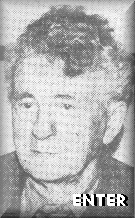

WATERTOWN DAILY TIMES TUPPER LAKE BUREAU
Correspondent, L.J. SIMMONS
FREE PRESS
Geo.E.Colon, Saranac Lake, Helped Carry Dr. Trudeau on Trip
Saranac Lake, Nov. 9.—One of the oldest Adirondack guides in Saranac Lake and in the entire Adirondack area, is George E. Colon of 86 Ampersand avenue, who helped to carry Dr. Edward Livingston Trudeau from Paul Smiths to Willis Pond, a trek of nearly 23 miles through some of the most dense wilderness in the early Adirondack section. He was one of two guides who made the trip with Dr. Trudeau, when the founder of tuberculosis sanatoria, was on the verge of death himself. Elverdo Patterson, who made the trip with Mr. Colon died several years ago. The adventure into the wilderness was to save Dr. Trudeau's life so that he might later come to Saranac Lake and establish the Trudeau sanatorium for the treatment and cure of tuberculosis.
"Dr. Trudeau came to Paul Smith's from New York to rest but his condition grew worse and gradually his health gave way entirely and doctors ordered him away from people whom he was eternally trying to help to help spite of his own serious condition," Mr. Colon said. "Elverdo Patterson, who was in charge of the doctor, and I carried him by canoe and over the seven carries between Paul Smiths and Willis Pond to the latter place where in six weeks time, he became seemingly as fit as we were."
Mr. Colon said that he and Patterson had to fairly steal Dr. Trudeau from Paul Smiths because the people there had become so attached to him and depended upon his help.
"When we were making the portage Elverdo had Dr. Trudeau in his canoe and I followed him with the baggage in another boat," He relates.
"We would carry Dr. Trudeau over one of the portages, make him comfortable and then go back after the luggage. All during that trip the doctor looked as though he were dead. There was no color in his face and all his strength was completely gone."
"After we arrived at Willis Pond, we cut him a bed of boughs until it was about 18 inches thick with soft balsam branches. Over this we raised a tent to keep out the weather. There was a spring hole just a short distance from our tent." Mr. Colon said. "In twenty minutes we could catch all the trout the three of us could eat. We used a piece of beef steak on a hook with about ten feet of line."
"As time went on Dr. Trudeau became interested in the trout spring and wanted to try his luck. We fixed him up near the hole and gave him the line and in a short time he had managed to catch enough fish for our meal. After that he insisted that he catch all the fish."
"He grew stronger daily, and it wasn't long before he wanted to help in shooting deer. We put him in the canoe and fixed his seat so he could manage a gun and one day started out down the stream. In half an hour he had killed a deer. That was the end of hunting for us. From that time on the doctor not only wanted to catch the fish but also insisted that he be allowed to kill all the deer."
"After six weeks' time had passed, Dr. Trudeau was apparently as well as any of us. When we came out of camp he looked like an Indian and it made us sweat to keep up with the pace he set. He carried his full share of the baggage on the way out too."
"Dr. Trudeau, stayed at Paul Smiths' for about six or seven years after he came out of Camp Willis. He then came to Saranac Lake, where he started his sanatoria, known as "Little Red", up on Mt. Pisgah, which was later to develop into a great sanatorium for Tuberculosis patients."
"I heard him say a number of times that that particular spot on Mt. Pigah would be a good place for people to go and rest. One of the things that interested him a great deal up there were the number of red foxes that ran wild over the mountain side. Before he came to Saranac Lake to stay he used to drive over from Paul Smiths' every day with his big bay horse and buckboard. He was interested only in the welfare and curing of other people and went out of his way many times to help those who couldn't afford to pay a doctor for his treatment."
Mr. Colon, who was 17 years old at the time he helped to carry Dr. Trudeau into the Adirondack wilds, came to Saranac Lake by wooden sleigh from the hills of Vermont where he was born. He was six years old when he made the journey with his father and mother and his sisters and brothers. The sleigh was padded well with straw and was covered over the top with a protecting shield of patchwork blankets.
The family came from Fairfield, Vt., 74 years ago across the ice of Lake Champlain during one cold winter to settle with the first inhabitants of this area. Mr. Colon's father had a job here cutting timber. He housed his family in a log cabin with one room for which he had paid $65, including many additional acres of land and timber.
"There were only four houses in Saranac Lake then," Mr. Colon pointed out. "I can remember driving through Tupper Lake about 60 years ago, when there were only two buildings in the entire area."
Mr. Colon has been a guide for many notable people during his long career. They include Dr, Richard Cabot of Boston, for whom he built a log cabin on Spruce Island.
Robert H. Hoe of the family which invented the Hoe Printimg Press, was also one of Mr. Clon's customers. He built a birch bedroom set out of birch trees on the Hoe place for Mrs Olivia P. Hoe, wife of the inventor. She paid Mr. Colon $250 for its construction and though she was offered many times that amount for the set, she refused.
R. J. Morgan of the Morgan steamship lines was another of the clients and when he was 18 years old he helped while the first cabin was being constructed on Upper Saranac. He cooked for the twelve workmen who were constructing the camp for Mr. Morgan. Also he had to work two hours with the men in the morning and another two hours in the afternoon.
Few men today, who have lived a life with equal ruggedness, boast the vigorous health that Mr. Colon has today. With his 80th birthday only two months away, he is more active than many a man his junior. He hasn't done any guiding work lately but says he could.